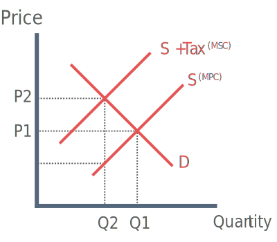
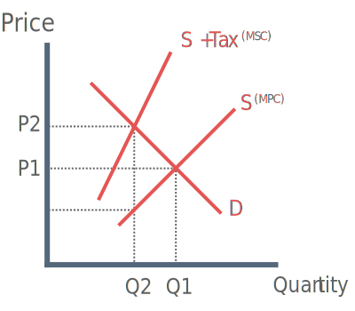

Specific Taxation

In the free market price and quantity are P1 and Q1. S = MPC.
However if the external costs MEC are taken into account the supply curve should be at S + Tax, giving the socially optimal out put Q2.
The government therefore impose a tax which is equal to the MEC (marginal external cost) which shifts S (MPC) to S + Tax (MSC).
Note: The amount of tax is greater than the change in price
P1 – P2 of the tax is paid by consumers
The rest is paid by the producers
The more inelastic the higher the tax burden on the consumer.
Ad Valorem Taxation

Ad Valorem causes a non-parallel shift of the supply curve. This is because ad valorem tax is always the same percentage of the price, therefore higher prices cause a steaper curve.
Regardless of the non-parrallel shift, the burden of tax on the consumer and producer is calculated in exactly the same way as a specific tax.